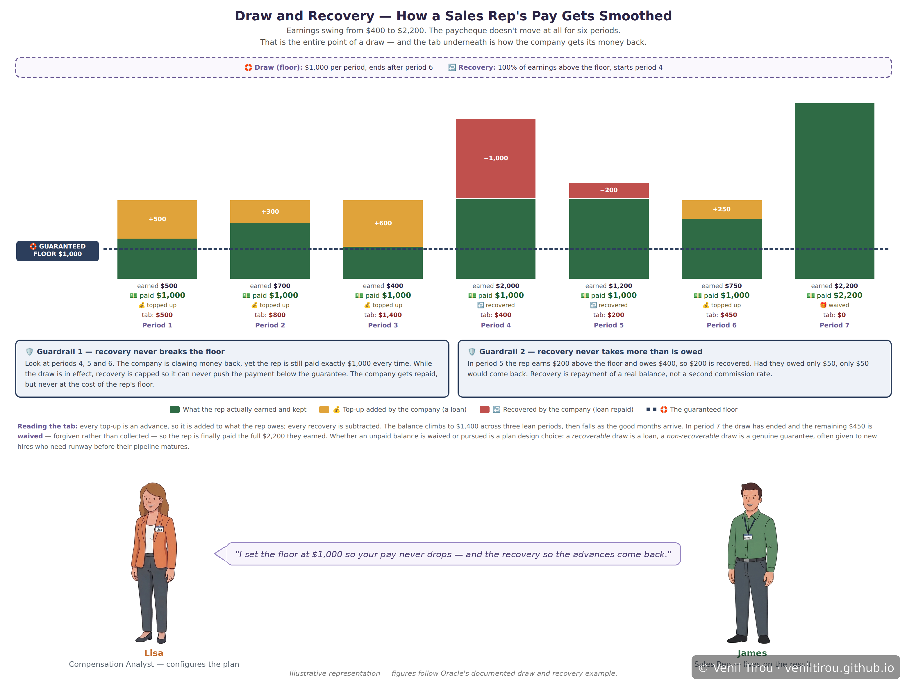
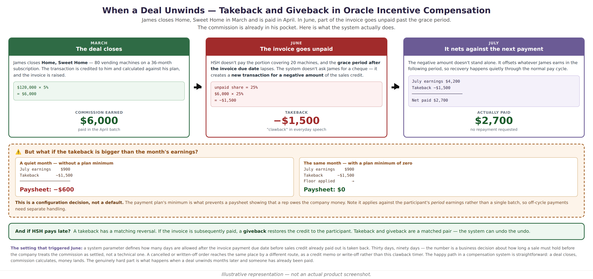

When the Payment Isn't Final — Draws, Recovery, Takeback and Giveback
Most explanations of sales compensation stop at the happy path: a deal closes, a formula runs, money lands. This chapter covers the two mechanisms that break that tidy picture — money paid before it was earned, and money reclaimed after it was paid. Both are ordinary, both are configured deliberately, and both surprise people the first time they meet them.
In the first, his income should swing with his deals — some months three close, some months none — but his rent does not. Lisa, ABC's compensation analyst, configures a draw so his pay never drops below a floor, and a recovery so the company gets those advances back out of his good months.
In the second, an entirely different deal and a later year: James closes a contract with Home, Sweet Home, the realty services client from the OIC chapters, and is paid commission on it. Months afterwards HSH fails to pay part of the invoice. A takeback quietly reverses the commission he has already received — and a giveback would restore it if HSH eventually pays.
Two Setups, Two Behaviours
Both situations in this chapter involve the same person, the same module and the same kind of money. What makes them behave so differently is configuration — two distinct setups, each producing its own outcome. Worth holding these side by side before reading either one.
| Setup A — the draw arrangement | Setup B — the unpaid-invoice arrangement | |
|---|---|---|
| The problem it solves | A rep's income swings with the deal cycle, but their outgoings don't. The company absorbs the gap. | Commission is paid on a sale before the customer's money actually arrives. Sometimes it never does. |
| What is configured | A payment plan carrying a minimum payment amount, a duration, whether it is recoverable, and when recovery begins. | A system parameter for days allowed after the invoice due date, plus a payment plan with a minimum of zero. |
| Which way money moves | Forward. The company advances money the rep has not yet earned, then reclaims it later. | Backward. Money already paid is reversed once the sale fails to hold. |
| The mechanism | Draw tops the payment up to the floor; recovery collects those advances from later earnings. | Takeback creates a negative credit transaction; giveback restores it if the invoice is later paid. |
| The protection | Recovery can never push the payment below the guaranteed floor. | The zero minimum prevents a paysheet showing the rep owes the company money. |
| In this chapter | Situation 1 — six periods of James's own earnings, on a $1,000 floor. | Situation 2 — a separate Home, Sweet Home deal, later, with no draw running. |
Situation 1 (Setup A) — Paid Before It Is Earned: Draws and Recovery

📱 On mobile? Pinch to zoom to read the details clearly.
Recovery is how the company collects that balance, out of his good months rather than by asking for a cheque — the red blocks. The striking thing is the row of paid amounts: $1,000 in every one of the first six periods, while his actual earnings swing between $400 and $2,200. That flatness is the entire purpose of a draw. Only in period 7, once the draw has ended, does his pay reflect what he genuinely earned.
Two guardrails keep it fair. Recovery never breaks the floor — in periods 4, 5 and 6 the company is reclaiming money yet James is still paid exactly $1,000. And recovery never takes more than is owed. In the final period the outstanding $450 is waived rather than pursued, which is itself a plan-design choice: a recoverable draw is a loan, while a non-recoverable draw is a genuine guarantee, often given to new hires who need runway before their pipeline matures.
Situation 2 (Setup B) — A Different Deal: Reclaimed After It Is Paid

📱 On mobile? Pinch to zoom to read the details clearly.
What this shows: the mirror image of a draw. There, the company paid James money he had not yet earned. Here, the money has already reached him and something later makes it unearned. In June, HSH still has not paid part of that invoice, and the grace period lapses.
The system does not send anyone to ask for the money back. It creates a new transaction for a negative amount of the sales credit — $1,500, being the unpaid quarter — and that simply nets against his next payment. In July he earns $4,200, the takeback deducts $1,500, and he is paid $2,700. Recovery happens quietly, through the normal pay cycle.
Note that James is no longer on a draw here — that arrangement ended in Situation 1 — which is why his July pay reflects his actual earnings rather than a flat floor. Had a draw still been running, the guardrail from Situation 1 would have applied and his payment could not have fallen below it.
The setting behind it is a business decision rather than a technical one: a system parameter defines how many days may pass after the invoice due date before paid-out credit is reclaimed. Thirty days, ninety days — the number expresses how long a sale must hold before the company treats the commission as settled.
The case worth planning for is when a takeback is larger than the month's earnings. Without a floor, the paysheet would show that the rep owes the company money. A payment plan with a minimum of zero prevents that, setting the paysheet to zero instead — but this must be configured deliberately, and it applies against the participant's period earnings rather than a single batch, so off-cycle payments need separate handling. And if the customer eventually pays, a giveback restores the credit. Takeback and giveback are a matched pair; the system can undo the undo.
Why This Chapter Matters
What makes both workable is that neither is punitive by default. Recovery cannot break the floor. Takebacks net against future pay rather than demanding repayment. A negative paysheet can be prevented outright, and an outstanding balance can be waived. Every one of those is a configuration choice made by someone like Lisa long before the awkward month arrives — which is the real lesson: the humane behaviour is designed in, not discovered later.
Concepts Covered
| Concept | What it means | Situation |
|---|---|---|
| Draw | A guaranteed minimum payment per period, configured on a payment plan. Whatever the participant actually earns, the draw ensures at least the floor amount reaches them — smoothing income that would otherwise swing with the deal cycle. | 1 |
| Draw adjustment | The top-up added when earnings fall short of the floor. It is an advance rather than a gift, so it is added to a running balance the participant owes. | 1 |
| Recovery | How the company collects those advances back — out of earnings above the floor in later periods, rather than by requesting repayment. Recovery can be set to start immediately or after a delay. | 1 |
| Balance due | The running tally of advances not yet recovered. It rises with every top-up and falls with every recovery, and can be waived at the end rather than pursued. | 1 |
| Recoverable vs non-recoverable | A recoverable draw is a loan against future commission. A non-recoverable draw is a genuine guarantee the participant never repays — commonly used for new hires who need runway before their pipeline matures. | 1 |
| The floor guardrail | While a draw is in effect, recovery is capped so it can never push the payment below the guaranteed minimum. The company is repaid, but never at the cost of the participant's floor. | 1 |
| Takeback | Oracle's term for what is colloquially called a clawback. When an invoice goes unpaid past the grace period, the system creates a new transaction for a negative amount of the sales credit, reversing commission already paid. | 2 |
| Netting against future pay | A takeback is not a demand for repayment. The negative amount simply offsets whatever the participant earns next, so recovery happens through the normal pay cycle. | 2 |
| The grace-period parameter | A system setting defining how many days may pass after the invoice payment due date before paid-out credit is reclaimed. The number is a business decision about how long a sale must hold before commission is treated as settled. | 2 |
| Giveback | The matched reversal of a takeback. If the invoice is subsequently paid, the credit is restored to the participant — so the system can undo the undo. | 2 |
| Preventing negative payments | If a takeback exceeds the period's earnings, the paysheet would show the participant owing money. A payment plan with a minimum of zero prevents this — but it must be configured deliberately, and applies against period earnings rather than a single batch. | 2 |
| Payment plan | The object where all of this is configured: the draw amount and duration, whether it is recoverable, when recovery starts, the cap, and the minimum that prevents a negative paysheet. | 1, 2 |